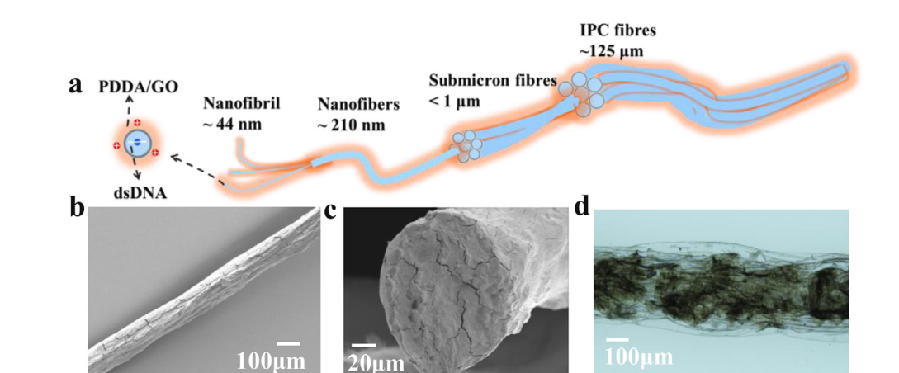
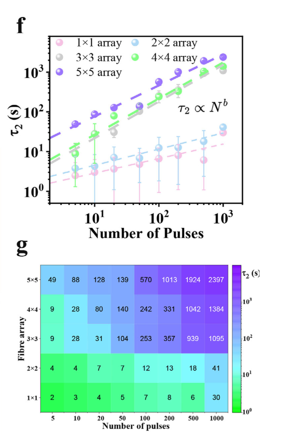
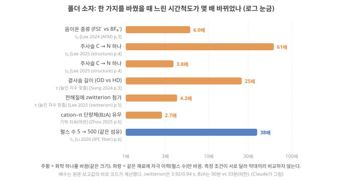
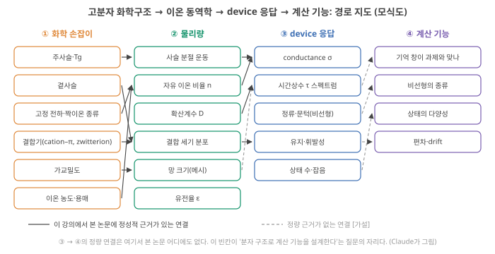

Day 42. 가교·염 농도, 논문의 교란변수, 화학 → τ → 계산 지표의 경로
Phase 4 · 왜 이온성 고분자인가
이번 질문 가교와 염을 늘리면 n과 D가 어떻게 함께 움직이고, 논문들은 화학 하나를 바꿔 무엇을 보였으며, 그 시간상수 변화는 과제의 기억(MC)까지 어떻게 이어지나?
왜 배우나 가교·염 논문에서 바꾼 것과 교란변수를 가르고 MC까지 이어지는지 본다.
오늘의 장면 가교밀도↑·염 농도↑ → Tg·n·D 동시 변화 → σ·τ·메모리 창 → 쓸 만한 지연 수 MC_k
오늘 반드시 가교·염은 n과 D를 함께 움직여 '많이 = 좋게'가 아니다. 'device 응답 → 계산 기능' 연결은 아직 잇지 못했다.
나중에 봐도 됨 논문별 수치 · 5-2 연구 현황 · 가교의 Tg 상승량
넘어가는 기준 '오늘 반드시'를 내 말로 말할 수 있으면 충분합니다.
이후 쓰이는 곳 Day 43–44 conductance와 성능 · Day 45–46 polyelectrolyte·착물화 · Day 49–50 온도 민감도 · Day 53–56 교란변수 막는 실험
지난 학습 복습
지난 학습 단위(Day 41 · Tg·분절 운동과 VFT, 이온쌍과 결합의 '떠나기·머물기')의 핵심을 다른 예로 확인합니다. 고르는 즉시 맞았는지와 이유가 보입니다. 틀려도 아래 학습자료는 그대로 열려 있고, 틀린 문제에는 다시 볼 곳이 붙습니다.
학습자료
3. 가교밀도와 이온 농도: '더 많이'는 늘 '더 좋게'가 아니다
이 구간을 읽고 나면 가교밀도와 이온 농도가 각각 \(D\), 움직이는 이온의 수, 시간상수에 어떤 방향으로 작용하는지 작은 예의 숫자로 말하고, 두 손잡이 모두 "늘리면 계속 좋아지는" 손잡이가 아님을 논문의 예로 보일 수 있다.
상황. 가교제를 늘리거나 염을 2배로 넣은 시료의 \(\sigma\)와 \(\tau\)를 재서 논문이 "가교 때문에 이렇게 바뀌었다"고 쓴다고 합시다. 가교와 염은 움직이는 이온 수 \(n\)과 확산계수 \(D\)를 동시에 건드리므로, 숫자 하나만 보고 원인을 말하면 안 됩니다. 이 구간은 어느 쪽이 어떻게 움직이는지 작은 예로 계산합니다.
1–2구간에서 쓴 도구 셋을 다시 꺼냅니다. (1) VFT 식 \(\sigma = A\exp[-B/(T-T_0)]\), \(T_0 \approx\) Tg − 50 K: 예시값 B = 1000 K로 Tg가 50 K 낮으면 25 °C의 \(\sigma\)와 \(D\)가 약 77배이고, 같은 크기 device의 τ는 1/77입니다(작은 예: Tg −10 °C, 10 ms device). (2) \(\sigma \propto nD\): conductance는 움직이는 이온 수 \(n\)과 확산계수 \(D\)의 곱입니다. (3) 이온쌍은 중성이라 \(n\)에서 빠지고, \(\lambda_D\)는 \(n\)의 제곱근에 반비례합니다. 이번 구간의 두 손잡이(가교, 염 농도)는 이 셋 가운데 어느 항을 함께 움직이는지로 읽습니다.
가교밀도. Wang 2025는 고분자망이 촘촘할수록 이온의 움직임에 입체적 저항이 커져 확산계수가 줄고, 이온과 사슬의 상용성이 나쁘면 이동 경로가 줄어 이동도가 더 떨어진다고 정리합니다. Wang 2025 (Chem. Soc. Rev.), p.305 같은 리뷰는 망 밀도·전하 분포·작용기 밀도·친수성의 기울기 구조(gradient: 위치에 따라 바뀌게 만든 구조)로 이온 종 사이의 수송 속도 차이를 키우는 전략을 그림으로 정리합니다. Wang 2025 (Chem. Soc. Rev.), p.304 망 밀도는 기계적 이완도 바꿉니다. Day 39–40에서 본 압전이온(piezoionic) 하이드로겔(누르면 겔 속 용매와 이온이 밀려 전압·전류가 생기는 겔, Day 40 5구간)에서 고분자 함량을 30%에서 15%로 줄이자 응답이 빨라졌는데, 저자들은 유체 투과도(permeability: 용매가 고분자망 틈을 지나가기 쉬운 정도)가 커져 기계적 이완 시간이 짧아졌기 때문이라고 봅니다. Dobashi 2022, p.505 가교·망 밀도는 \(D\)(이온 쪽)와 기계적 이완(망 쪽)을 함께 바꾸는 손잡이입니다. 해석
얼마나?(작은 예로) 무용매 고분자에서 가교가 Tg를 10 K 올렸다고 하고 앞의 VFT 예시(B = 1000 K, \(T_0\) = Tg − 50 K)를 쓰면, 25 °C의 \(\sigma\)와 \(D\)는 Tg −60 °C 재료에서 1/1.8, Tg −10 °C 재료에서 1/4.8이 됩니다(코드 계산). 같은 크기라면 시간상수는 그 배수만큼 길어집니다(작은 예의 10 ms device라면 48 ms). Tg에 가까운 재료일수록 같은 가교가 시간을 더 크게 옮깁니다. 가교가 Tg를 실제로 몇 K 올리는지는 재료마다 달라 DSC(Tg를 재는 열분석)로 재야 합니다. [가설: 10 K는 예시값]
이온 농도. 이온이 많으면 conductance가 오를 것 같지만, 두 가지가 그 기대를 깎습니다. 첫째, 진할수록 이온쌍이 늘어 움직이는 이온의 비율이 줄 수 있고(앞에서 본 이온쌍과 해리), 둘째, 진할수록 점도가 올라 이온 하나의 이동도가 떨어질 수 있습니다 [해석: 일반 전해질 지식]. 무용매 고분자에서는 둘째가 Tg 상승으로 나타납니다. 염의 양이온이 사슬의 극성기에 배위(coordination: 이온이 주변 원자 여러 개에 둘러싸여 붙들리는 것)해 분절을 붙들기 때문입니다. PEO–리튬염(LiTFSI)의 분자동역학 시뮬레이션(molecular dynamics, MD: 원자 하나하나의 움직임을 컴퓨터로 푸는 계산)에서는 Tg 상승이 염 농도에 비례했습니다 Tsamopoulos 2023, 초록. 그래서 이온 수 \(n\)이 늘어나는 이득을 \(D\)가 깎아, conductance가 어떤 염 농도에서 최대가 되는 경우가 흔히 보고됩니다 [미확인: 일반 고분자 전해질 지식] 원문 미대조. 작은 예로 따라갑니다(해리도는 같다고 가정, 코드 계산).
단계 1 — 이온 수. 염을 2배로 넣었다. 해리도가 같으면 움직이는 이온 수 \(n\) ×2.
단계 2 — 확산계수. 그 염이 Tg를 10 K 올렸다고 하자(예시). 위 가교 예와 같은 계산으로 \(D\)는 Tg −60 °C 재료에서 1/1.8, Tg −10 °C 재료(작은 예)에서 1/4.8.
단계 3 — conductance. \(\sigma \propto nD\)이므로 2 × (1/1.8) ≈ 1.1배(Tg −60 °C 재료), 2 × (1/4.8) ≈ 0.42배(Tg −10 °C 재료). 같은 2배 염이 한쪽에서는 거의 그대로, 다른 쪽에서는 절반 이하입니다.
단계 4 — 계면 충전 시간. \(\lambda_D\)는 움직이는 이온 농도의 제곱근에 반비례하므로 \(1/\sqrt{2} \approx\) 0.71배. \(\lambda_D L/D\)는 여기에 \(D\)의 역수를 곱해 0.71 × 4.8 ≈ 3.4배(작은 예의 재료), 0.71 × 1.8 ≈ 1.3배(Tg −60 °C 재료)가 됩니다. 이온을 더 넣었는데 계면 충전이 오히려 느려질 수 있다는 뜻입니다.
흥미로운 반례도 있습니다. Dobashi 2022는 PVDF-HFP 고분자 전해질(LiTFSI를 유기 용매인 프로필렌카보네이트에 녹여 고분자에 스며들게 한 것)에서, 1 M보다 진한 염일 때 이온전도도가 같은 농도의 용액보다 높았고, 고분자 망이 이온–이온·이온–용매 상호작용을 줄인다고 해석합니다. Dobashi 2022, p.504 하이드로겔이 아니라 유기 용매를 품은 고분자 전해질의 결과입니다. 망이 이온쌍 형성을 방해하는 쪽으로 작용할 수도 있다는 뜻입니다.
계산 기능 쪽에서는 더 분명한 예가 있습니다. Zheng 2025의 이온탄성체 device에서 TFSI⁻ 함량을 3.61%, 4.97%, 7.55%로 바꾸자 가장 낮은 함량은 도핑이 부족했지만, 중간과 높은 함량은 비슷한 메모리 창을 보였고, 높은 함량은 성능 이득 없이 전력 소모만 늘었다고 저자들은 씁니다. Zheng 2025, p.6 이온을 더 넣는 것이 어느 지점부터는 기억을 늘리지 않고 비용만 늘린 것입니다. 이것이 Day 43–44의 질문("이온전도도가 높으면 성능도 좋은가")의 예고편입니다.
자극 이력도 '구조'다. 같은 재료라도 얼마나 자극했느냐에 따라 시간상수가 달라질 수 있습니다. 폴리양이온(PDDA)과 폴리음이온인 DNA를 계면에서 만나게 해 서로 끌어당겨 엉긴 착물(complex)로 섬유를 뽑은 Li 2026(계면 착물화(interfacial complexation) 섬유)은, 느린 이완 시간상수 \(\tau_2\)가 펄스 수 5개에서 500개로 늘 때 50 s에서 1920 s로 커졌고 Li 2026 (IPC fiber), p.6, 섬유가 엇갈리는 접점 수에 따라 그 증가 방식(거듭제곱 지수)이 바뀌었다고 보고합니다. Li 2026 (IPC fiber), p.6 저자들은 나노–마이크로 크기의 계층 구조(섬유 지름 약 125 µm 안에 1 µm 미만의 미세 섬유, 약 44 nm의 피브릴: 가장 가는 실 가닥)가 여러 크기의 이온 포획과 이동을 만든다고 해석합니다. Li 2026 (IPC fiber), p.3 그러니 "이 재료의 τ는 얼마다"라는 말에는 자극 조건이 함께 붙어야 합니다. 해석
원문 그림 읽는 법(아래 Li 2026 Fig. 2a–d와 Fig. 4f–g): 첫 그림은 섬유가 어떻게 생겼나(크기 사다리와 현미경 사진), 둘째 그림은 그 섬유를 몇 번 자극했느냐에 따라 느린 시간상수 \(\tau_2\)가 얼마나 바뀌나입니다. 둘째 그림의 f는 가로·세로 모두 로그 눈금이라, 한 칸이 10배입니다. 직선이면 거듭제곱 관계(power law, \(\tau_2 \propto N^b\), \(N\): 펄스 수, \(b\): 직선의 기울기)입니다.


내가 합성하는 polyelectrolyte(또는 ionogel)에서 가교제 양, 이온 함량, 수분(또는 이온액체) 함량을 각각 한 단계씩 바꿨을 때, \(D\)·움직이는 이온 수·기계적 이완 가운데 무엇이 함께 바뀔지 적어 보세요. 손잡이 하나가 셋 중 하나만 바꾸는 경우가 있나요? 없다면, 무엇을 고정하는 대조군이 필요할까요?
생각 정리 보기
- 판정 절차: 손잡이마다 "\(D\), 움직이는 이온 수 \(n\), 기계적 이완" 세 칸에 ○/×를 적고, 문헌이나 측정으로 근거를 붙입니다.
- 예시 답 해석: 가교제를 늘리면 Tg가 올라 \(D\)가 줄고 기계적 이완도 바뀌므로 둘 이상이 함께 바뀝니다. 셋 중 하나만 바꾸는 손잡이는 드뭅니다.
- 그래서 필요한 대조군: 가교제만 바꾸고 염 농도·함수율을 고정한 계열, 그리고 Tg를 따로 재서 \(D\) 변화 중 Tg로 설명되는 몫을 가르는 것.
- 한 손잡이의 효과를 말하려면 나머지 둘을 고정한 비교가 있어야 합니다.
- 가교·망 밀도↑ → 이온 \(D\)↓, 기계적 이완 변화. 두 효과가 함께 온다 Wang 2025 (Chem. Soc. Rev.), p.305 Dobashi 2022, p.505.
- 이온 농도↑ → 움직이는 이온 수가 비례해 늘지 않는다(이온쌍, 점도·Tg 상승). 예시: 염 2배 + Tg 10 K↑ → \(\sigma\) 1.1배 또는 0.42배. 망이 이온 상호작용을 줄이는 반례도 있다 Dobashi 2022, p.504.
- 이온 함량을 늘려도 메모리 창은 포화되고 전력만 늘었다 Zheng 2025, p.6. τ는 자극 이력에도 달려 있다(50 → 1920 s) Li 2026 (IPC fiber), p.6.
4. 논문 사례: 화학 하나를 바꿨을 때 무엇이 바뀌었고, 무엇이 함께 바뀌었나
이 구간을 읽고 나면 같은 그룹의 네 연구(Lee 2024 (AFM), Sung 2024, Lee 2025 두 편)와 Zheng 2025·Zhou 2025의 설계를 "바꾼 것 / 함께 바뀐 것 / 결과"로 표에 옮기고, 어떤 설계가 원인을 가장 깨끗하게 분리했는지 판단할 수 있다.
먼저 한 가지를 바꿨을 때 느린 시간척도가 몇 배 바뀌었는지 한 그림에 모읍니다(그림 4). 그림의 기호 둘을 먼저 정리합니다. \(\tau_2\), \(\tau_3\)은 펄스 뒤 감쇠 곡선을 지수 여러 개의 합으로 맞췄을 때 두 번째·세 번째(느린 쪽) 시간상수입니다(Day 38 4구간: 무엇이 τ를 정하나). '늘인 지수 맞춤'(stretched-exponential fit)은 감쇠 곡선을 \(I_0\exp[-(t/\tau)^\beta] + I_\infty\) 하나로 맞춘 \(\tau\)입니다(Kohlrausch 늘인 지수 함수, KWW). \(\beta\)는 0–1 사이의 수로, 1이면 보통의 지수 감쇠이고 1보다 작을수록 여러 시간상수가 섞여 꼬리가 길다는 뜻입니다. Sung 2024, p.3 가로축은 로그 눈금(1, 10, 100배가 같은 간격)입니다. 조건이 서로 다르므로 막대끼리 비교하는 그림이 아니라, "화학 하나가 몇 배의 손잡이인가"의 자릿수를 보는 그림입니다.

이제 각 연구에서 함께 바뀐 것을 봅니다. 화학 하나를 바꾸면 거의 언제나 다른 성질도 함께 바뀌고, 그것이 원인을 흐립니다. 이것을 교란변수(confounder)라 부릅니다: 결과에 영향을 주면서, 바꾸려던 변수와 함께 움직이는 다른 변수. 예를 들어 음이온만 바꾸려고 시판 이온액체 세 종류를 샀는데 양이온도 서로 다르다면, 양이온이 교란변수입니다. 아래 표에서 '수준 수'는 바꾼 변수를 몇 가지 값으로 비교했는지이고, 분자량 Mn은 사슬 길이의 평균 척도(수평균 분자량, number-average molecular weight)입니다.
| 연구 | 바꾼 것 (수준 수) | 함께 바뀐 것 (교란 후보) | 결과 | 원인 분리 |
|---|---|---|---|---|
| Lee 2024 (AFM) | 이온액체 음이온 BF₄⁻/FSI⁻/TFSI⁻ (3) | 양이온도 다름(BMIM/EMIM/DEME) Lee 2024 (AFM), p.10, 점도·해리도 | FSI⁻에서 \(\tau_3\) 6배 Lee 2024 (AFM), p.3 | 약함 |
| Sung 2024 | 곁사슬 길이 HD/OD/DT (3) | 분자량 Mn 30.4/62.6/38.8 kg/mol, 결정 배향 Sung 2024, p.10–11 | OD에서 τ 25 ms(최대), 비단조 Sung 2024, p.3 | 약함 |
| Lee 2025 (zwitterion) | zwitterion 첨가 유무 (2) | 전체 이온 농도, 점도, 수분 해석 | τ 0.94 → 3.92 s Lee 2025 (zwitterion), p.5 | 약함 |
| Lee 2025 (structure) | 주사슬 C → N (2) | 정공 이동도·결정성·배향·에너지 준위가 함께 Lee 2025 (structure), p.4 | \(\tau_2\) 61배, \(\tau_3\) 3.76배 | 중간(구조 측정은 풍부, 2시료) |
| Zhou 2025 | cation–π 단량체 유무 (2) | 물리 가교(망 구조)도 함께 Zhou 2025, p.3 | 90분에 17% vs 33분에 0 Zhou 2025, p.6 | 약함 |
| Zheng 2025 | 짝이온 Br⁻/DCN⁻/FSI⁻/TFSI⁻ (4), 이온 함량 (3) | 사슬 고정(이온교환), 이온 없는 대조군 있음 Zheng 2025, p.2, 4 | TFSI⁻ 최적, 중간 결합이 최적 Zheng 2025, p.5 | 상대적으로 강함 |
이 표가 말하는 것은 두 가지입니다. 해석
첫째, 화학은 강력한 손잡이입니다. 같은 크기에서 시간척도를 수 배–수십 배 바꿉니다. Day 39–40에서 본 대로 τ ∝ \(L^2\)이라면 61배는 크기를 \(\sqrt{61} \approx\) 7.8배 키운 것과 같습니다(Day 40 5구간: 재료만 바꾼 경우).
둘째, 원인을 가린 연구는 드뭅니다. 대부분 2–3 수준의 비교이고, 바꾼 것과 함께 다른 성질이 움직였습니다. 2 수준(전/후)만으로는 효과가 꾸준히 커지는지, 중간에 최적이 있는지도 알 수 없습니다. Zheng 2025의 "같은 사슬에 짝이온만 이온교환"과 "이온 없는 대조군"이 원인을 가장 깨끗하게 떼어 낸 설계입니다. 대조군은 메모리 창이 이온에서 오는지 고분자 자체에서 오는지를 가릅니다. 내가 polyelectrolyte·ionogel 연구를 설계한다면 이 방식, 즉 하나만 바꾸고 나머지를 고정하는 계열 + 연속적으로 바꾼 여러 수준 + 대조군이 출발점이 됩니다. 가설
저자 해석과 측정의 거리. 위 연구들의 메커니즘 설명(상호 반발, 쌍극자 정렬, 곁사슬 포획, 깊은 도핑)은 DFT 계산이나 간접 측정에 기댑니다. 간접 측정의 예는 순환 전압전류(cyclic voltammetry, CV: 전압을 왕복으로 훑으며 전류를 재 어떤 반응이 어느 전압에서 일어나는지 보는 측정)와 ex situ 원소 분석(elemental analysis: device에서 꺼낸 시료를 따로 분석)입니다. 예를 들어 Sung 2024의 DFT 계산에서는 곁사슬이 길수록 음이온 흡착이 강해지는데 Sung 2024, p.5, 실험에서 가장 오래 남은 것은 중간 길이였고, 저자들은 그 차이를 결정 배향으로 설명합니다. 계산의 경향과 실험의 최적이 어긋날 때 사후 설명이 붙는 것입니다. 메커니즘 이름은 가설로 읽고, 결과(배수)는 측정으로 읽는 것이 안전합니다. 해석
- 화학 하나로 느린 시간척도가 수 배–수십 배 바뀐다: 음이온 FSI⁻/BF₄⁻ 6배 Lee 2024 (AFM), p.3, 주사슬 C→N 61배 Lee 2025 (structure), p.4, 곁사슬 OD/HD 25 ms ÷ 1 ms = 25배 Sung 2024, p.3, zwitterion 3.92 ÷ 0.94 s ≈ 4.2배 Lee 2025 (zwitterion), p.5, cation–π 90분 ÷ 33분 ≈ 2.7배 이상(하한) Zhou 2025, p.6. 자극 이력도 1920 ÷ 50 s ≈ 38배 Li 2026 (IPC fiber), p.6. 6·61배는 원문이 배수로 쓴 값, 나머지는 원문 보고값의 비를 계산한 것(4구간의 그림).
- 대부분 2–3 수준 비교이고 교란변수가 있다: 양이온 차이, 분자량 차이, 물리 가교, 점도.
- 원인을 가장 깨끗하게 떼어 낸 설계: 같은 사슬에 짝이온만 교환 + 이온 없는 대조군 Zheng 2025, p.2, 4.
5. 경로 지도: 화학구조 → 이온 동역학 → device 응답 → 계산 기능
이 구간을 읽고 나면 화학 손잡이에서 계산 기능까지의 경로를 네 칸으로 그리고, 어느 화살표에 논문 근거가 있고 어느 화살표가 비어 있는지 말하며, 작은 예의 τ가 과제 지표(MC)를 어떻게 바꾸는지 따라가고, 이 분야가 어디까지 왔고 무엇을 넘어야 하는지 적을 수 있다.
1–4구간에서 본 것을 한 장에 놓습니다(그림 5). 왼쪽부터 ① 화학 손잡이(Tg·주사슬, 곁사슬, 고정 전하·짝이온, 결합기, 가교, 이온 농도·용매) → ② 물리량(분절 운동, 자유 이온 수, \(D\), 결합 세기 분포, 망 크기, 유전율) → ③ device 응답(conductance, 시간상수 스펙트럼, 정류·문턱, 유지, 상태 수·잡음) → ④ 계산 기능(기억 창이 과제와 맞나, 비선형의 종류, 상태의 다양성, 편차·drift)입니다. ④의 말은 Phase 2–3에서 배운 것입니다(Day 24 기초: 시간척도의 정합, Day 25 기초: kernel quality, Day 33 기초: 편차). 볼 것: 실선과 점선이 어디서 갈리는가.

어디까지 이어져 있나. 화학 손잡이 → 물리량(① → ②)은 고분자 물리의 오래된 지식과 앞 1–3구간의 논문 예들이 정성적으로 받칩니다. 물리량 → device 응답(② → ③)도 시간상수·유지·히스테리시스의 변화로 보였습니다(4구간의 시간척도 비교). 그러나 device 응답 → 계산 기능(③ → ④), 즉 "시간상수 스펙트럼이 이렇게 바뀌었으니 이 과제의 기억 용량이 이만큼 는다"는 연결은 여기서 본 어느 논문도 정량으로 보이지 않았습니다. 이 그룹들의 계산 평가는 대부분 측정한 weight 상태를 신경망 시뮬레이션에 넣은 분류 정확도이고(Day 27–28에서 본 MNIST형), reservoir computing의 기억 용량(MC)이나 기준선 비교는 없습니다. 해석 논문 노트 기준 Zhu 리뷰도 이완 시간·농도 기울기·이동 궤적 같은 이온 흐름의 특성을 의미 있는 표현으로 해독하는 일을 근본 과제로 꼽고, 어떤 이온 특성이 정보로서 의미가 있는지 정하는 것이 아직 풀리지 않았다고 씁니다. Zhu 2025, p.19
5-1. 손잡이 하나를 계산 지표까지: 예시 계산
device 응답 → 계산 기능(③ → ④)이 비어 있다는 것은 "논문들이 재지 않았다"는 뜻이지 "이을 수 없다"는 뜻은 아닙니다. 빈칸이 채워지면 어떤 모양일지, Day 23–24에서 손으로 계산한 모형에 작은 예의 숫자를 넣어 봅니다. 모형을 다시 말하면(Day 23 2구간: 노드 하나): 입력이 \(T_\text{sym}\)마다 하나씩 들어오고, 상태는 \(x \leftarrow d\,x + (1-d)\,u\)로 update됩니다. \(d = e^{-T_\text{sym}/\tau}\)는 한 입력 간격 동안 상태가 남는 비율이고(leak되는 몫은 \(1-d\)), 확산계수 \(D\)와는 다른 양입니다. 읽을 때 잡음(표준편차 0.01)이 섞입니다. \(MC_k\)는 지금 상태로 \(k\)개 전 입력을 얼마나 되살리는지 나타내는 0–1의 숫자이고(Day 24 3구간: 10 ms device와 10 s device), 여기서 \(k\)는 지연 단계 수라 볼츠만 상수 \(k_B\)와 다른 기호입니다. 이것은 Claude의 예시 계산이고 측정이 아닙니다. 실제 device는 시간상수가 여럿이고(4구간) 비선형이라, 숫자보다 방향과 자릿수를 보세요.
Tg가 50 K 낮은 고분자로 바꾸면 이온이 약 77배 빨라집니다(위 VFT 예시 계산). 2 ms마다 입력이 오고 최근 10개 입력이 필요한 과제에서, 기억으로 쓸 만한 지연(지연별 기억 \(MC_k\)가 0.05를 넘는 \(k\))의 수는 늘까요, 줄까요? 먼저 고르고 아래 단계를 넘기세요.
단계 1 — 기준 device(작은 예). Tg −10 °C 고분자로 만든 device, 25 °C의 시간상수 τ = 10 ms. 과제는 Day 23–24의 '빠른 과제'입니다: 입력 간격 \(T_\text{sym}\) = 2 ms, 필요한 지연 \(k\) = 1–10. \(d = e^{-2/10} = 0.819\)이고, Day 23–24 표 첫 줄과 같은 device라 창 안의 MC 합 0.98, 쓸 만한 지연 5개(\(MC_1\)–\(MC_5\) = 0.33, 0.22, 0.15, 0.10, 0.07)입니다.
단계 2 — ① 화학 → ② 물리량. 같은 크기에 Tg가 50 K 낮은 고분자를 씁니다. 분절 운동이 빨라져 \(D\)가 약 77배가 됩니다(위 VFT 예시 계산, 움직이는 이온 수는 같다고 가정).
단계 3 — ② → ③ device 응답. τ ∝ 1/\(D\)이므로 10 ms → 0.13 ms. 한 입력 간격(2 ms) 동안 τ의 15배가 지나 \(d = e^{-15.4} \approx 2\times10^{-7}\), 곧 다음 입력이 오기 전에 상태가 원래로 돌아갑니다.
단계 4 — ③ → ④ 계산 지표. 창 안의 MC 합은 1.00이지만 전부 \(k\) = 1입니다. 방금 입력만 기억하고, 쓸 만한 지연은 5개 → 1개로 줄었습니다. 이온이 빨라진 것이 이 과제에서는 손해입니다(Day 23–24의 '너무 빨리 잊는' 실패).
단계 5 — 반대 방향과 온도. Tg가 50 K 높은 고분자면 τ = 0.77 s, \(d\) = 0.997입니다. 입력 하나가 상태를 0.3%만 움직여 잡음에 묻히고, 창 안의 MC는 0.04, 쓸 만한 지연은 0개입니다. 기준 device를 그대로 체온(37 °C)에서 쓰면 τ가 2.3 ms(\(d\) = 0.43)로 짧아져 쓸 만한 지연이 5개에서 2개로 줍니다(\(MC_1\) = 0.82, \(MC_2\) = 0.15). readout을 37 °C에서 다시 학습해도 그렇고, 상온에서 학습한 readout을 그대로 쓰면 더 나쁠 것입니다. 해석
같은 방식으로 이번에 본 손잡이 넷(과 결합 세기)을 한 표에 놓습니다. 기준은 위의 10 ms device와 2 ms 과제이고, 배수는 1–3구간의 예시 계산입니다(코드 계산).
| 손잡이(바꾸는 쪽) | 먼저 바뀌는 물리량 | device의 양: 방향과 크기 | 과제 지표에서는(Day 23–24 모형, 입력 2 ms·창 10) | 근거 |
|---|---|---|---|---|
| Tg 50 K ↓ (유연한 주사슬·곁사슬) | 분절 운동↑ → \(D\)↑ | \(\sigma\), \(D\) ×77, τ 1/77(10 → 0.13 ms). 온도 민감도↓(37 °C에 4.3 → 1.8배). 정류비(한 방향 전류 ÷ 반대 방향 전류, Day 37 3구간)도 분절 운동을 따라 바뀜(poly(ionic liquid) 접합에서 온도↑ → 정류비↑) | 쓸 만한 지연 5 → 1 | VFT 예시(1구간); Tg↑ → σ↓, 온도와 정류비 Balqis 2026, p.27071 |
| 가교밀도↑ (Tg +10 K 가정) | 분절 운동↓, 망 크기↓ | \(D\) 1/4.8, τ ×4.8(10 → 48 ms). 기계적 이완도 함께 바뀜 | 창 안 MC 0.98 → 0.56, 지연 5 → 6: 더 멀리 닿지만 지연마다 흐려지고, MC 약 0.43이 과제에 필요 없는 창 밖(k > 10)으로 감 | 예시(3구간); Wang 2025 (Chem. Soc. Rev.), p.305 Dobashi 2022, p.505 |
| 염 농도 ×2 (Tg +10 K 가정) | \(n\) ×2, 그러나 \(D\)↓ | \(\sigma\) ×1.1 또는 ×0.42(Tg와의 거리에 따라). \(\lambda_D\) ×0.71 | 측정에서는 메모리 창이 포화하고 전력만 늘었다 | 예시(3구간); Zheng 2025, p.6 Tsamopoulos 2023, 초록 |
| 이온쌍↑ (해리 30%) | 움직이는 이온 \(n\) ×0.3 | \(\sigma\) ×0.3, \(\lambda_D\) ×1.8 → 계면 충전 τ ×1.8. 입력 한 번의 상태 변화 폭 ×0.3 [가정] | 변화 폭만 보면 창 안 MC 0.98 → 0.95(잡음 0.01). 잡음이 클수록 손해가 커진다 | 2구간 기초 상자; 모형 계산 |
| 결합 세기(출발지↓·도착지↑) | 떠나는 이온 수, 되돌아오는 속도 | 메모리 창(히스테리시스 = 비선형)과 유지 | 측정: TFSI⁻가 고리 최대·유지 최선. 과제 지표로는 미측정 | Zheng 2025, p.5–6 |
표를 읽는 법: 같은 방향의 화학 변화(이온을 빠르게)가 과제에 따라 득도 되고 실도 됩니다. 2 ms 과제에 τ = 10 ms device는 맞았고, 77배 빠른 device는 너무 빨리 잊었습니다. 같은 고분자 변화가 입력 간격이 약 26 µs(2 ms ÷ 77)인 과제라면 오히려 기준 device와 똑같은 정합(\(T_\text{sym}/\tau\) = 0.2, \(d\) = 0.819)을 만듭니다. 그러니 계산의 말로는 "conductance를 올리는 화학"이 목표가 아니라, 과제의 입력 간격에 τ를 맞추고(Day 23–24), 그 τ를 온도에 덜 흔들리게 하며(Tg에서 멀리), 상태 변화 폭을 잡음보다 크게 하는(해리) 화학이 목표입니다. 이 표의 셋째·넷째 열 사이, 곧 ③ → ④는 모형이 이은 것이고 실제 device로 잰 것이 아닙니다. 해석
5-2. 연구는 어디까지 왔나 / 한계 / 넘어야 할 것
- 어디까지 왔나. 짝이온·결합기·곁사슬·주사슬·전해질 첨가제로 기억 시간과 유지를 수 배–수십 배 조절한 예가 쌓였습니다(4구간의 시간척도 비교). 같은 사슬에 짝이온만 바꾸는 깨끗한 설계도 나왔습니다 Zheng 2025, p.2. 계층 구조와 자극 이력으로 시간상수를 프로그래밍하는 착물화 섬유도 있습니다 Li 2026 (IPC fiber), p.6.
- 지금 한계. (a) 2–3 수준 비교와 교란변수, (b) 메커니즘 귀속이 계산·간접 측정에 기댐, (c) 고분자 이완과 전기적 기억의 정량 사슬 부재(1구간), (d) 계산 기능과의 연결이 분류 정확도 시뮬레이션에 머묾.
- 넘어야 할 것. 연속적으로 바꾼 화학 계열(예: 짝이온의 크기를 4–5단계, 결합기 함량을 몇 %씩), 같은 시료에서 이온 확산계수·유변학 이완·전기적 이완을 함께 잰 데이터, 그리고 ③ → ④를 잇는 계산 지표(Day 19–20의 information processing capacity, Day 21–22의 memory capacity)로 평가하기. 가설
가장 강한 반론. "고분자 구조를 바꾸는 것은 결국 시간상수 하나를 옮기는 일이다. 시간상수는 device 크기나 측정 회로(저항–capacitor)로도 옮길 수 있다. 굳이 화학으로 할 이유가 없다." 이 반론의 앞부분은 많은 경우 맞습니다. Day 39–40에서 본 대로 크기는 더 넓은 손잡이이고, Day 29–30에서 본 대로 저항–capacitor 회로도 서서히 잊는 기억을 만듭니다(Day 30 기초). 화학이 크기나 회로로 대신할 수 없는 일을 하려면, (a) 같은 크기에서 서로 다른 시간상수 여러 개를 한 device에 넣거나(다중 모드), (b) 이온 종류마다 다른 시간상수를 주거나(Day 35–36의 화학 선택성), (c) 기계적·열적 자극과의 결합을 바꾸는 것처럼, 단일 R–C circuit이 갖지 못한 상태변수를 줘야 합니다. 그것이 계산에 도움이 되는지는 ③ → ④의 빈칸을 채워야 알 수 있습니다. 해석
내 연구의 화학 손잡이 하나를 골라 "화학 손잡이 → 물리량 → device 응답 → 계산 기능"의 네 칸을 끝까지 채워 보세요. 화학 손잡이에서 물리량으로 갈 때 무엇이 함께 바뀌나요? 물리량에서 device 응답은 무엇으로 재겠나요(conductance, 감쇠 곡선, 임피던스)? device 응답에서 계산 기능은 무슨 과제와 지표로 평가하겠나요? 가장 먼저 막히는 칸이 Day 53–54 가설 후보의 자리입니다.
생각 정리 보기
- 판정 절차: 네 칸에 한 줄씩 씁니다. 화학 손잡이(무엇을 바꿨나) → 물리량(무엇이 함께 바뀌나, 측정 방법) → device 응답(어떤 측정으로 읽나) → 계산 기능(어떤 과제와 지표로 평가하나).
- 예시 답 해석: 가교제 증가 → Tg 상승과 \(D\) 감소(DSC, conductance) → step response의 \(\tau\) 증가(지수 맞춤) → 입력 간격에 맞는 과제의 기억 용량(MC)은 평가한 적 없음.
- 가장 먼저 막히는 칸은 보통 마지막 칸(device 응답 → 계산 기능)이고, 그 빈칸이 실험 가설 후보입니다.
- 경로: 화학 손잡이 → 물리량 → device 응답 → 계산 기능. ①→③은 정성 근거가 쌓였고, ③→④는 정량 연결이 비어 있다 해석.
- 예시 계산(Day 23–24 모형): Tg 50 K↓ → \(D\) ×77 → τ 10 → 0.13 ms → 2 ms 과제에서 쓸 만한 지연 5 → 1. 같은 화학 변화가 과제의 입력 간격에 따라 득도 실도 된다 [Claude 계산].
- 넘을 것: 연속 화학 계열, 같은 시료의 다중 측정(\(D\)·유변학·전기), 계산 지표(IPC·MC)로의 평가 가설.
- 반론(화학은 τ 하나를 옮길 뿐): 화학이 회로를 이기려면 다중 모드·종별 시간상수·자극 결합처럼 R–C circuit에 없는 상태변수를 줘야 한다 해석.
오늘의 총정리
자료를 덮고 아래 표를 먼저 머릿속으로 채운 뒤 펼쳐 보세요. 그다음 종합 퀴즈를 풉니다.
한 장 요약 펼치기
| 질문 | 한 줄 답 | 근거·조건 |
|---|---|---|
| Tg와 이온 | 무용매 고분자에서 이온은 분절 운동에 기대어 움직인다. Tg 50 K 차이 → 예시 계산 77배 | Zhu 2025, p.10; VFT 예시 매개변수 |
| 손잡이 → 계산 지표 | 이온을 빠르게 하는 화학이 늘 좋은 것은 아니다. τ가 입력 간격에 맞는가로 득실이 갈린다(예시: Tg 50 K↓ → 쓸 만한 지연 5 → 1) | 5-1절 예시 계산(Day 23–24 모형, Claude 계산) |
| 고분자 이완 = 전기적 기억? | 아니다. 0.003 s·13 s vs 52 ms–113 h, 정량 사슬 없음 | Zhou 2025, p.3–4, 6 |
| 이온–고분자 결합 | '세게'가 아니라 '잘 떠나고 잘 머무나'. 중간 결합이 최적 | Zheng 2025, p.2, 5 |
| 가교·농도 | 더 많이 ≠ 더 좋게. 이온 함량↑에 메모리 창 포화, 전력↑ | Zheng 2025, p.6 |
| 화학 손잡이의 크기 | 느린 시간척도를 수 배–수십 배(61배 = τ ∝ L²일 때 크기를 약 7.8배 키운 것과 같음) | 4구간의 그림(논문 보고값의 비) |
| 원인 분리 | 대부분 2–3 수준 + 교란변수. 짝이온 이온교환 + 무이온 대조군이 모범 | Zheng 2025, p.2, 4. 사전 테스트와 '먼저 만들어 보기'에서 "이온이 잘 붙을수록 기억이 좋다"고 답했다면 여기가 달라질 지점 |
| τ는 재료 상수인가 | 아니다. 자극 이력에 따라 50 → 1920 s | Li 2026 (IPC fiber), p.6 |
| 가장 강한 반론 | "τ는 크기·회로로도 옮긴다" | 화학만 줄 수 있는 상태변수가 필요. 내 답에서 응답 |
| 모르는 것 | ③ device 응답 → ④ 계산 기능의 정량 연결 | Day 43–44·Day 53–54 |
내 답에 꼭 들어가야 할 것
- Tg·분절 운동이 무용매 고분자 속 이온에 왜 중요한지, 하이드로겔과는 무엇이 다른지 적었나?
- 고분자 이완 시간과 device의 전기적 기억 시간을 구분했나?
- 이온–고분자 결합을 '떠나기'와 '머물기'의 두 방향으로 설명하고, 화학 손잡이 하나 이상을 예로 들었나?
- 가교밀도·이온 농도가 '늘릴수록 좋은' 손잡이가 아님을 숫자 예와 함께 적었나?
- 논문 사례에서 교란변수를 하나 이상 지적하고, 원인을 분리하는 실험 설계를 한 줄로 적었나?
- 화학 → 물리량 → device 응답 → 계산 기능의 네 칸을 내 연구로 채우고, 비어 있는 칸을 표시했나?
장부에 옮길 후보
- 병목 장부: (a) 응용이 요구하는 시간상수 안정성(온도 변화에도) vs Tg에 가까운 재료의 강한 온도 민감성(예시 계산: 37 °C에 4.3배). (b) 계산 기능으로 가는 평가 지표(MC·IPC)의 부재 — 화학 손잡이의 효과가 분류 정확도 시뮬레이션으로만 보고됨.
- 아직 모르는 것: 내 polyelectrolyte·ionogel의 Tg와 분절 이완 시간은? / 같은 시료에서 유변학 이완과 전기적 이완은 어떻게 대응하나? / 짝이온만 바꾼 계열을 만들 수 있나(이온교환)?
- 용어집: 유리전이온도(Tg), 단량체, 분절 운동, 사슬 운동성, VFT 식, 겉보기 활성화 에너지, 가교밀도, 메시(망 크기), 극성기, 폴리전해질, 이온쌍, 해리, 짝이온, cation–π 상호작용, zwitterion, 교란변수, 이온교환, 계면 착물화.
- 접는 기준 후보: 화학 손잡이가 바꾸는 것이 시간상수 하나뿐이고 같은 일을 크기·회로로 더 싸게 할 수 있다면, 그 손잡이를 '계산 소재' 설계의 근거로 쓰지 않는다.
더 읽을거리
서지와 읽음·대조 상태는 참고문헌 페이지에 있습니다. 쪽수는 인쇄 쪽수입니다.
내가 읽은 논문 (다시 볼 곳)
- Zheng 2025, Adv. Mater. 37, e05312. p.2(같은 사슬에 음이온만 이온교환, DFT 결합 순위와 conductance), p.4(이온 없는 대조군), p.5(음이온별 히스테리시스), p.6(0.8 V 읽기 유지, 이온 함량 3.61/4.97/7.55%). 원인 분리 설계의 모범으로 다시 볼 만합니다.
- Zhou 2025, Nat. Commun. 16, 4573. p.3(고분자 이완 모드 13 s·0.003 s, 겉보기 활성화 에너지 107 kJ/mol), p.4(쌍펄스 52·395 ms), p.6(cation–π와 기억).
- Dobashi 2022, Science 376, 502–507. p.504(진한 염에서 PVDF-HFP 고분자 전해질의 conductance가 용액보다 높음), p.505(고분자 함량과 응답).
- Wang 2025, Chem. Soc. Rev. 55, 299–335. p.304(구조 기울기 전략), p.305(겔 속 \(D\)의 요인).
폴더에 있지만 아직 읽지 않은 논문 (Claude가 대조함)
../Eunho Lee/4편: Lee 2024 (AFM)(음이온과 상호 반발), Sung 2024(곁사슬), Lee 2025 (zwitterion)(EDL 동역학), Lee 2025 (structure)(구조–수송–유지). 4구간 표의 쪽을 다시 보세요.- Li 2026, Adv. Mater. e74913. 폴리양이온–DNA 계면 착물화 섬유, p.3(계층 구조), p.6–7(τ₂의 펄스 수·접점 수 의존). Day 45–46에서 착물화를 다시 봅니다.
- Zhu 2025 p.9–10(연성 이온 전도체의 정의, 무용매 재료의 conductance와 분절 운동).
- Balqis 2026, ACS Nano 20, 27066–27078. p.27071(Tg와 conductance, 분절 운동과 이온 이동의 분리). Day 45–46에서 자세히 봅니다.
폴더 밖 미확인
- 고분자 전해질에서 이온 수송이 분절 운동과 '분리(decoupling)'되는 경우를 다룬 연구들이 있습니다(
../notes/extra/Wang_2012_PRL.md에 노트만 있음). VFT 식은 일반 고분자 물리의 식으로, 폴더 원문으로 확인하지 않았습니다. \(T_0\) ≈ Tg − 50 K는 Williams–Landel–Ferry 1955(J. Am. Chem. Soc. 77, 3701)의 보편 상수 \(C_2\) = 51.6 K를 Claude가 VFT 꼴로 옮긴 어림입니다(서지는 Crossref, 상수값은 교재·장비 회사 해설 같은 2차 자료로 확인, 원문 미대조). - 염이 무용매 고분자의 Tg를 올린다는 3구간의 문장은 Tsamopoulos & Wang의 PEO–LiTFSI 분자동역학 연구(arXiv 2312.15401) 초록만 확인했습니다. conductance가 염 농도에 대해 최대를 갖는다는 일반론은 원문을 대조하지 않았습니다.
- 폴리전해질 복합체(PEC)의 염 농도–시간 중첩과 이온 함량(Akkaoui, Schlenoff, Ali 등)은
../notes/extra에 노트만 있습니다. 내 연구 소재가 PEC라면 원문을 구해 읽을 가치가 큽니다.
학습 완료
이 학습 단위를 마쳤으면 눌러 주세요. 쓰기·영상·심화·추가 연습은 필요 없고, 퀴즈 점수와도 따로 기록됩니다. '완료'는 이 단위를 끝냈다는 표시이지 모든 내용을 완벽히 익혔다는 뜻이 아닙니다.
선택 활동: 글로 정리하기
선택 활동 펼치기 · 백지 회상, 가르치듯 내 답, 사전 테스트 다시 풀기 (학습 완료와 무관)
가르치듯 내 답. 후배에게 설명한다고 생각하고 짧게(3–5문장 또는 작은 도식 하나) 답합니다.
사전 테스트 다시 풀기. 같은 문제를 이유와 함께 다시 풉니다(정답을 이미 본 문제라 이해 점검 점수로 쓰지 않습니다).